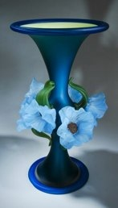

Steel Blue over Chartreuse with Blue Poppies

Smokey Topaz over Green with White Calla Lily

Purple over Dk Red with Red Poppies
Steel Blue over Chartreuse with Blue Poppies
Smokey Topaz over Green with White Calla Lily
Purple over Dk Red with Red Poppies


These are some great examples of how Susan can make amazing vases with glass.